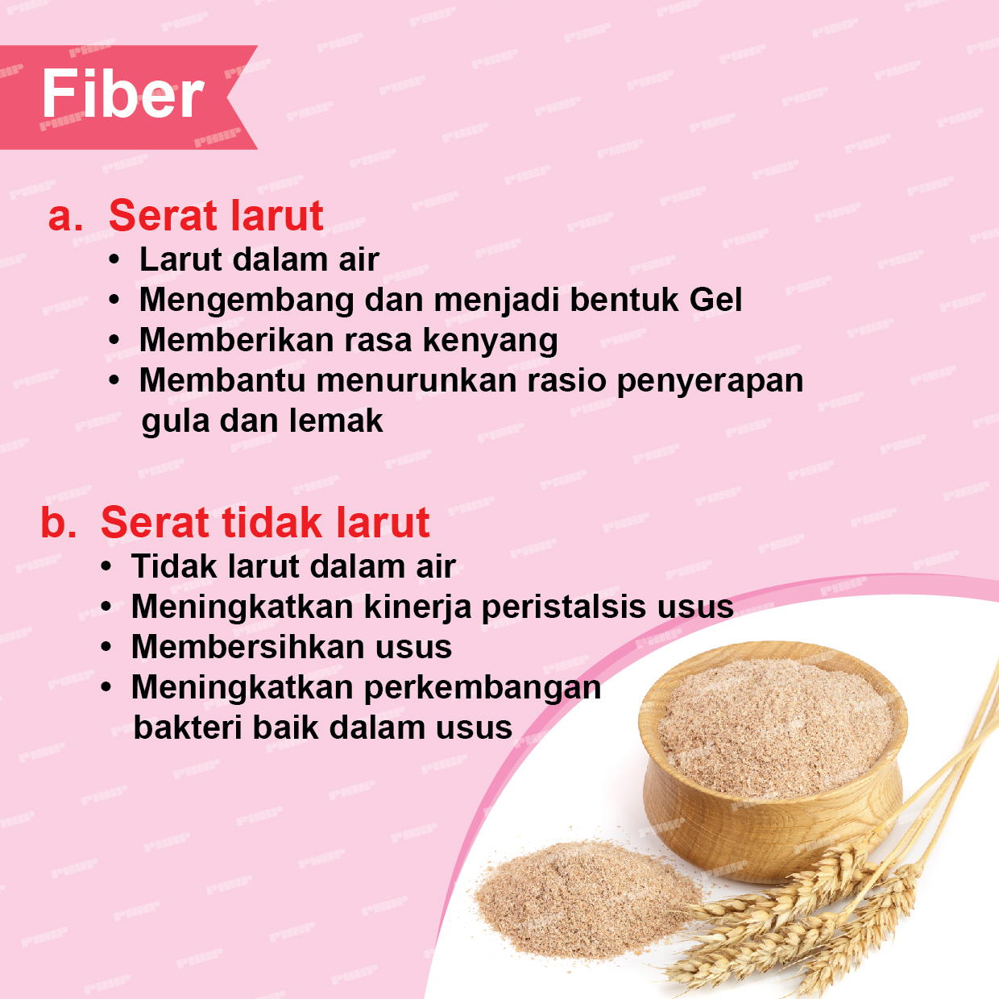
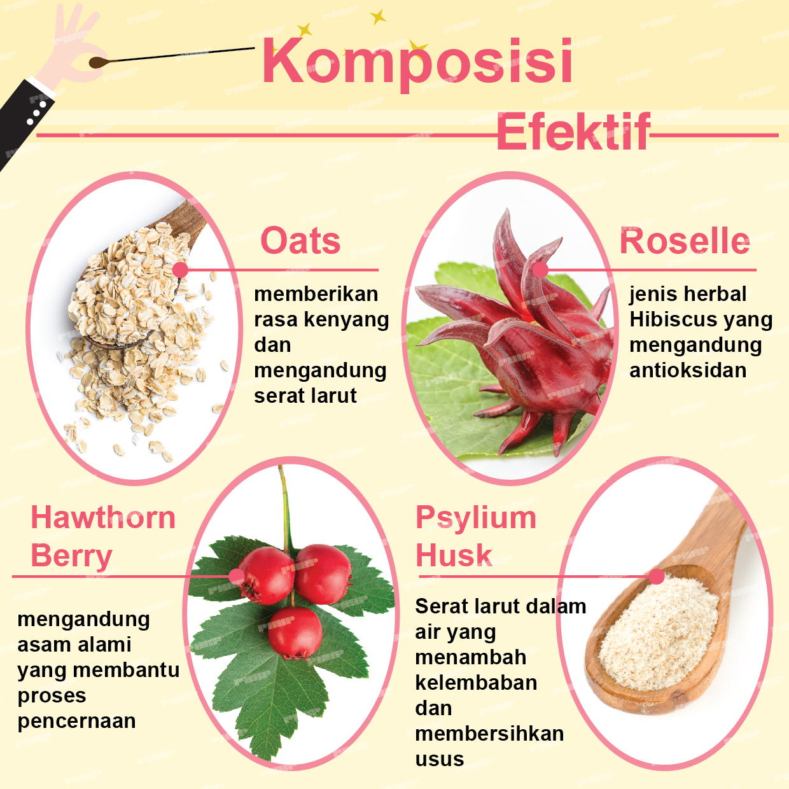

|
 |


Bahwa banyak penyakit ringan hingga penyakit berbahaya berasal dari saluran pencernaan Anda? Bahan pangan seperti buah berasal dari kecepatan proses dengan pupuk kimia dan Pestisida. Bahkan hewan ternakpun menggunakan hormon. |

Menurut aturan diet yang dikutip dari buku panduan World Health Organization (WHO), manusia memerlukan serat sebanyak 25 – 35 gram setiap hari. Diet harian kita juga memerlukan serat yang larut air dan serat yang tidak larut air, bisa membantu meningkatkan gerakan peristalsis usus dan membantu menjaga sistem pencernaan tubuh kita. Phyto Fiber mengandung 4 bahan serat utama, serta mengandung serat larut air dan tidak larut air.  
  |

Klik tombol untuk memesan via PHHP Admin |